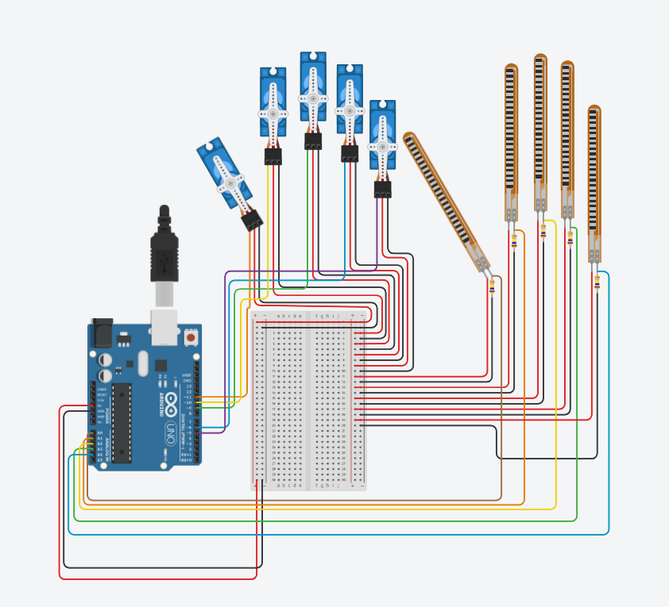

Démo
Capture d’exemple issue du dossier `docs/`.

Comment l’utiliser
Selon ton objectif :
1) IA (option)
Lancer le script Python pour prédire et afficher le geste.
2) Arduino
Uploader le code et connecter capteurs de flexion + servos.
Les détails dépendent du câblage (pins et calibration).